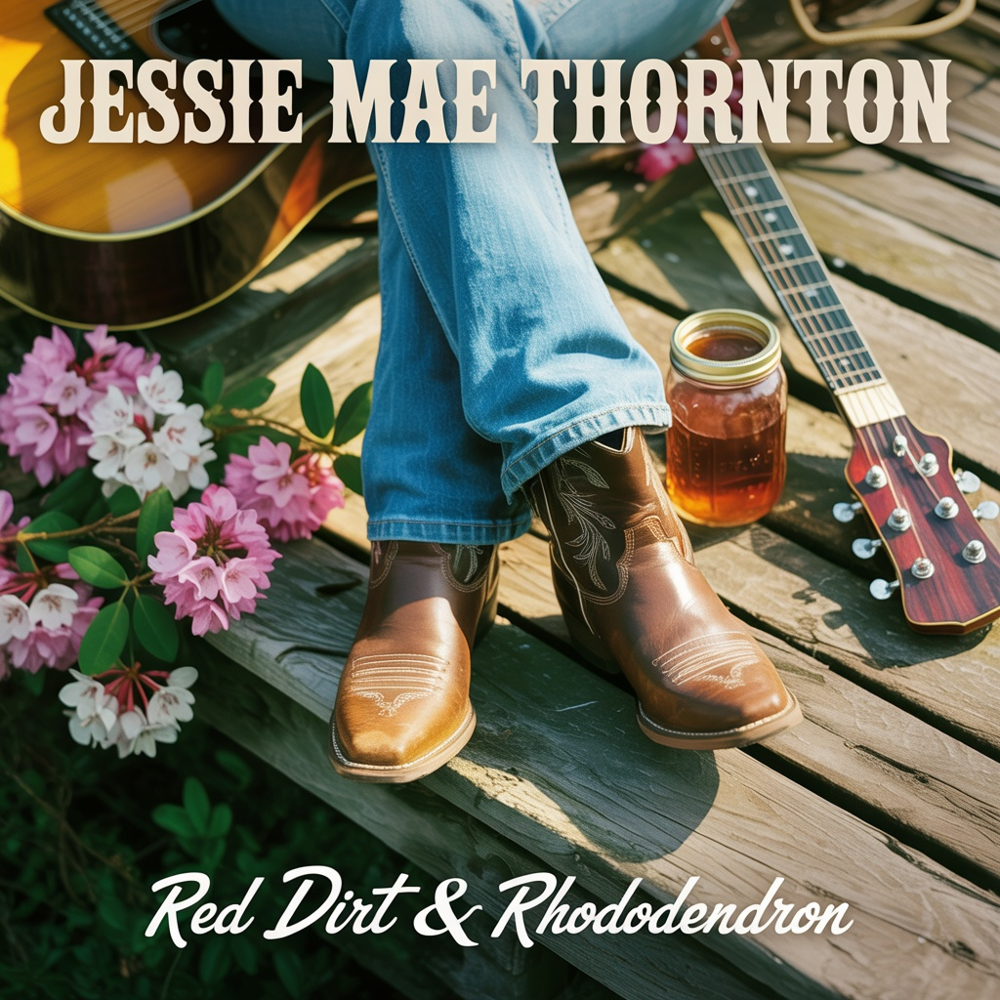
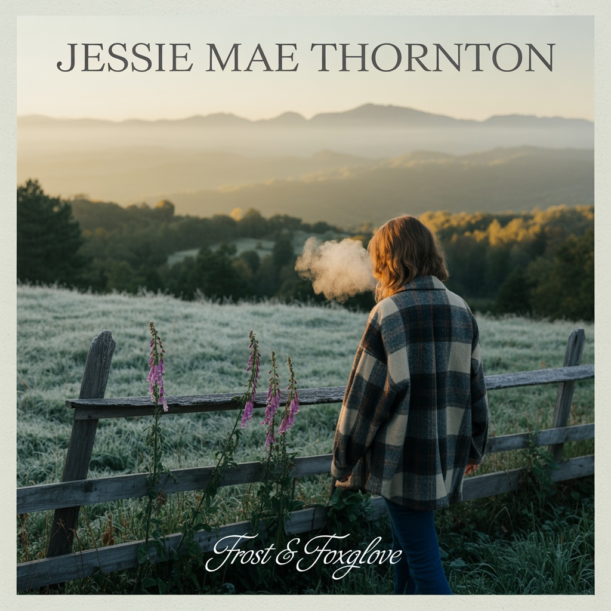

Modern Country / Americana


Jessie Mae Thornton grew up in a small town outside Staunton, Virginia, in the shadow of the Blue Ridge Mountains. Daughter of a tobacco farmer and a church choir director, she learned to sing harmony before she could read. She waitressed at a BBQ joint through high school, started writing songs on a beat-up Martin guitar her granddaddy left her, and got "discovered" after a video of her singing at Floyd Country Store went viral on TikTok.
She's been compared to a young Lainey Wilson meets Hailey Whitters, but her newest album "Learning to Let Go" (2026) shows a country-pop evolution that draws comparisons to Maren Morris and Kelsea Ballerini. Gritty, real, with a voice that sounds like whiskey and sweet tea mixed together. She still lives in Virginia and refuses to move to Nashville, saying "the songs come from the mountains, not Music Row."
Her four albums trace a journey: from the wide-eyed optimism of her debut "Red Dirt & Rhododendron," through the heartbreak and healing of "Frost & Foxglove," to the rowdy confidence of "Cheap Seats & Good Company," and now the vulnerable self-discovery of "Learning to Let Go." Each album is distinctly Virginia, deeply personal, and unapologetically honest. With her latest record, Jessie Mae proves she can honor her roots while reaching for something bigger.
Jessie Mae's stunning debut. A love letter to Southwest Virginia with its red dirt roads, rhododendrons, and the quiet beauty of small-town life. Warm, honest country music about home, family, and finding your voice when the world feels too big.
The album ranges from rowdy tailgate anthems to tender ballads. "Porch Light On" (track 11) inspired the label name and became an instant classic. This is the album that put Jessie Mae on the map and defined what 64 West Records would become.
Recorded in Staunton with a mix of Nashville session players and local Virginia musicians, the album captures the authenticity of Appalachian country without feeling dated. It's traditional enough for your granddaddy and modern enough for the dive bar jukebox.
The difficult second album. A year after the buzz faded, Jessie Mae confronts heartbreak, grief, and the slow work of healing. Stripped-down and melancholy, these songs understand that beautiful things and things that end you often look exactly the same.
Recorded almost entirely live with minimal overdubs, the album feels intimate and raw. Just Jessie Mae, her guitar, and the weight of everything she's been carrying. It's her "crying in the car" album, the one fans say saved them during their own dark winters.
While not as commercially successful as her debut, "Frost & Foxglove" proved Jessie Mae was a serious songwriter, not just a viral sensation. Critics called it "devastating" and "achingly beautiful." The album closer "Spring (I'm Still Here)" became an anthem for anyone who made it through the worst and lived to tell about it.
Jessie Mae is BACK. Loud, fun, and unapologetically rowdy, this is the sound of the best summer of her life. Beer-soaked parking lot tailgates, cheap concert seats with the best people, and the freedom to just let loose. Pure party country joy.
After the darkness of "Frost & Foxglove," this album is all sunshine and beer cans. It's tailgate country meets girls' night out energy. Think Miranda Lambert meets Megan Moroney. Every song is a potential summer anthem.
The title track became a stadium sing-along, and "Hell of a Tuesday" went viral on TikTok with 50 million views. Jessie Mae proved she could write heartbreak and healing, but she can also write the hell out of a party. This is her most confident, most fun, and most commercial work yet.
Jessie Mae's most vulnerable and powerful album yet. A country-pop evolution that moves beyond traditional Appalachian sounds into modern, radio-ready territory while keeping her emotional honesty intact. This is Jessie Mae's "Maren Morris moment" - showing she can bridge country authenticity with pop accessibility.
The album chronicles a journey of healing, self-discovery, and choosing yourself. From the title track's opening statement about releasing what doesn't serve you, through "Secondhand Heart" and "What I Deserve" (boundary-setting anthems), to the triumphant closer that brings everything full circle. "Wildfire" became an empowerment anthem, while "The One Who Stayed" shows gratitude for real love. "Mountain Girl in the City Lights" captures the duality of honoring your roots while reaching for something bigger.
Produced with a modern country-pop sound - electronic drums mixed with acoustic foundations, synth pads adding emotional depth, intimate verses building to powerful choruses. Comparisons to Maren Morris's "GIRL" and Kelsea Ballerini's "Subject to Change" are inevitable and earned. This is Jessie Mae growing up without selling out, proving she can write songs that matter and still get radio play. Her Virginia mountains are still there in every word - she's just learned she can carry them with her anywhere.
The crossover nobody expected and everybody needed. All Jessie Mae vocals. All Vexra production. Country lyrics over electronic beats. The porch meets the warehouse.
"Static & Soul" starts at a Virginia bonfire party and ends with two women realizing they're fighting the same fight from opposite sides of the sonic spectrum. Jessie Mae's warm Southern storytelling meets Vexra's glitchy, bass-heavy cyberpunk production — fiddle meets synth, gravel road meets glitch hop, bonfire meets strobe light.
The album arcs from rowdy party energy ("Bonfire & Bass," "Saturday Night Static") through dark, moody introspection ("Neon Foxglove," "Ghost Signal," "Hollow County") to its devastating emotional core ("The Mask & the Porch Light") and quiet resolution ("Tender Machine"). Includes a Vexra remix of the fan-favorite "Pretty When I'm Loud" that turns the chorus into a bass cannon. The final line of the album: "Leave the porch light on."